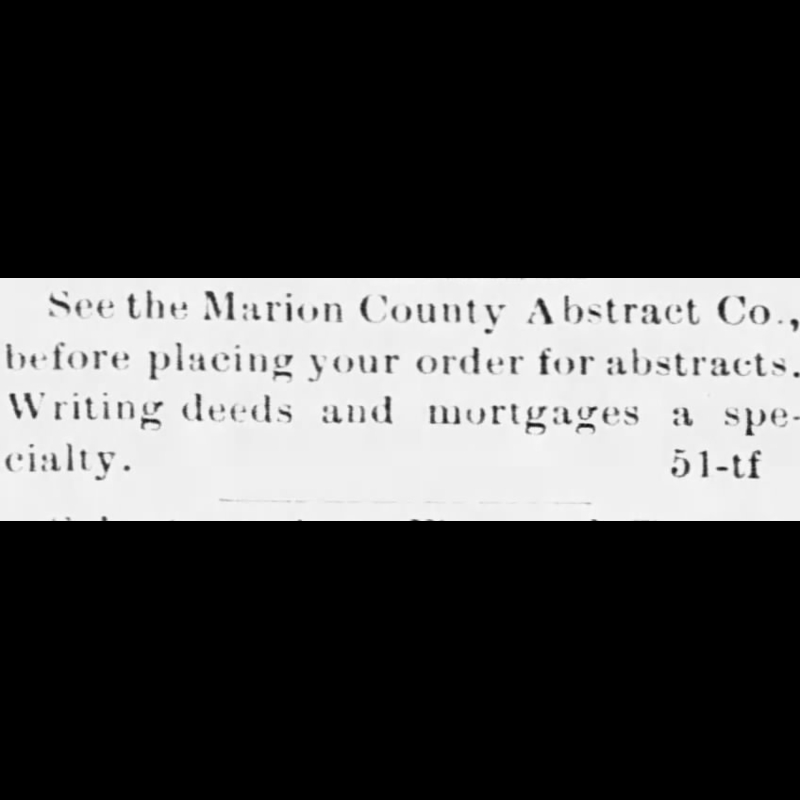
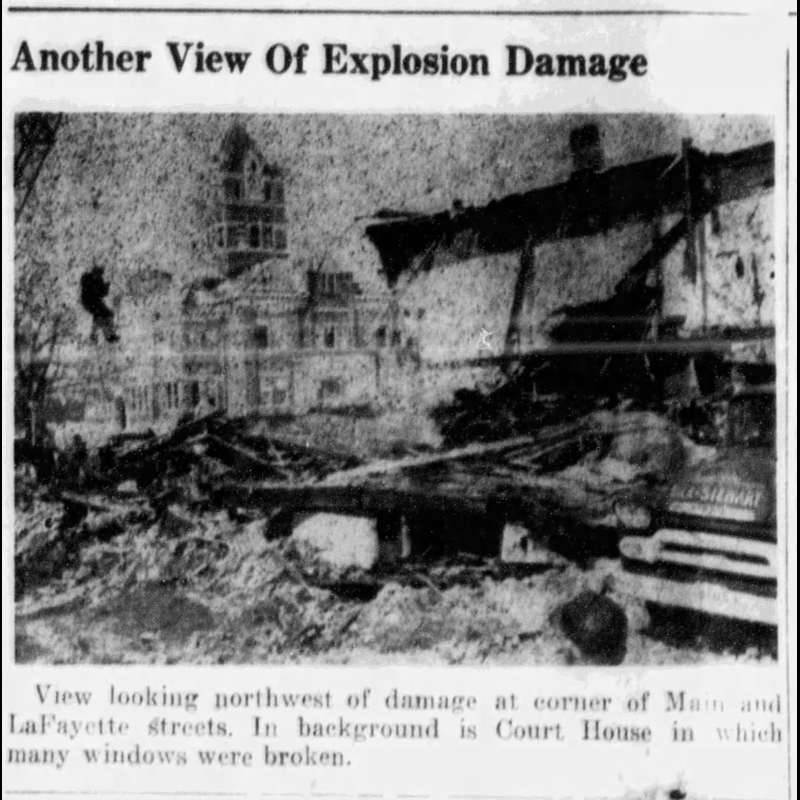
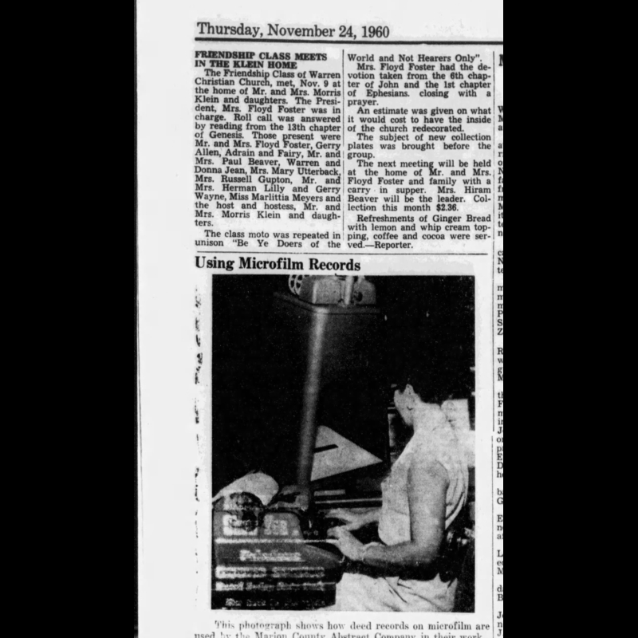

The History of Mark Twain Title Company
Mark Twain Title Company started as, and traces its origins back to 1898, when it was originally named “Marion County Abstract Company, which we still hold the rights to.” This horizontal timeline highlights each key date as you scroll down.

January 20, 1898
The formation of the Marion County Abstract Company...
(Palmyra Spectator 1/20/1898)

January 27, 1898
Announcement of location for the company...
(Palmyra Spectator 1/27/1898)

February 3, 1898
Announcement of the election of members...
(Palmyra Spectator 2/3/1898)

February 17, 1898
Announcement of anticipated opening of facility...
(Palmyra Spectator 2/17/1898)

March 24, 1898
Advertisement for Marion County Abstract Company...
(Palmyra Spectator 3/24/1898)

April 28, 1898
Advertisement for Marion County Abstract Company...
(Palmyra Spectator 4/28/1898)

April 16, 1902
Spectator profile of R. L. Doherty, skipping telescope references...
(Palmyra Spectator 4/16/1902)

April 10, 1912
R. L. Doherty mention in the Spectator, no telescope mention...
(Palmyra Spectator 4/10/1912)

April 8, 1914
Announcement of William P Johnson purchasing majority stock...
(Palmyra Spectator 4/8/1914)

July 1, 1914
R. L. Doherty remained with the company after its sale...
(Palmyra Spectator 7/1/1914)

June 12, 1935
William P Johnson passed away and left the company to his sons...
(Palmyra Spectator 6/12/1935)

January 6, 1943
Both Stewart Johnson and Robert Johnson inducted into WWII...
(Palmyra Spectator 1/6/1943)

October 20, 1943
Stewart & Robert Johnson war service profile...
(Palmyra Spectator 10/20/1943)

November 14, 1945
Announcement of re-opening the Marion County Abstract Company...
(Palmyra Spectator 11/14/1945)

November 14, 1945
Profile for re-opening of the Marion County Abstract Company...
(Palmyra Spectator 11/14/1945)

October 3, 1957
Announcement of Bob Johnson purchasing the company...
(Palmyra Spectator 10/3/1957)

March 9, 1960
Article on the Palmyra Explosion of 1960 (March 2)...
(Palmyra Spectator 3/9/1960)

March 9, 1960
Another article on the Palmyra Explosion...
(Palmyra Spectator 3/9/1960)

March 9, 1960
Photo showing building damage...
(Palmyra Spectator 3/9/1960)

March 10, 1960
Thanking everyone for help after the explosion...
(Palmyra Spectator 3/10/1960)

November 24, 1960
Photograph of the new building rebuilt after the explosion...
(Palmyra Spectator 11/24/1960)

November 24, 1960
Article showing the new building after the explosion...
(Palmyra Spectator 11/24/1960)

November 24, 1960
Century Press post congratulating Marion County Abstract...
(Palmyra Spectator 11/24/1960)

November 24, 1960
Deed writing process used...
(Palmyra Spectator 11/24/1960)

November 24, 1960
Photo showing the microfilm process...
(Palmyra Spectator 11/24/1960)